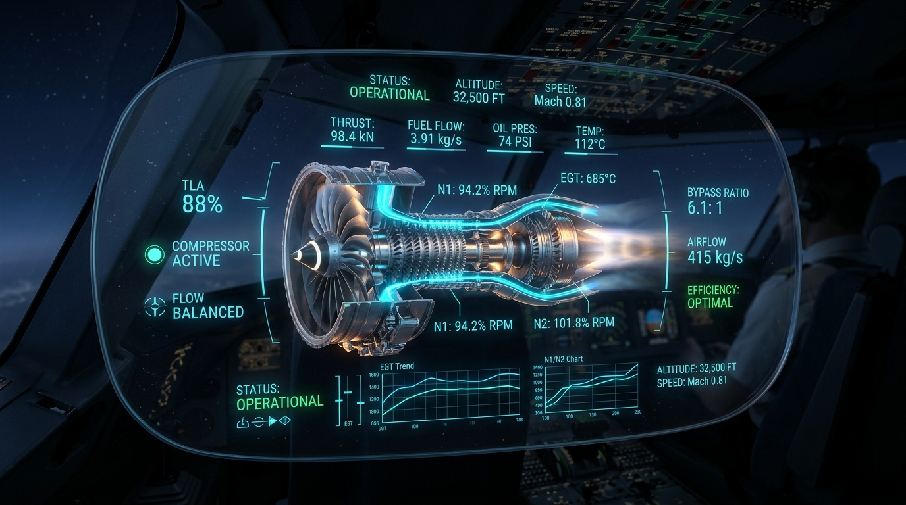
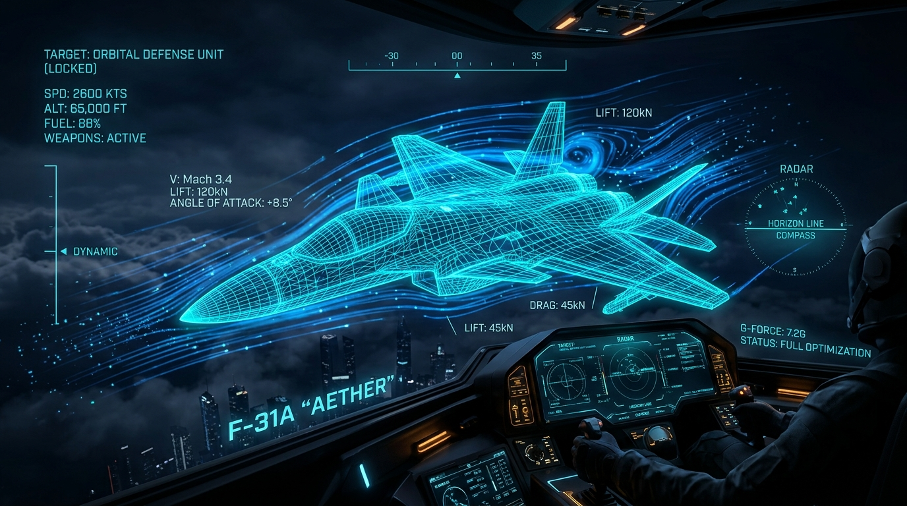

The Evolution & Meaning of Aerospace Digital Twins
Explore how physical flight hardware connects to real-time computational software replicas to revolutionize aircraft diagnostics, structural safety, and autonomous flight.
Engine Diagnostics Simulator
Test 7 real-time telemetry sliders & observe physical turbine degradation imagery.
Airframe Strain Digital Twin
Simulate Mach airspeed stress heatmaps, aeroelastic flex, and skin friction heat.
DRL Trajectory Planner
Simulate 2D autonomous flight routing around severe convective storms on canvas.
Predictive Jet Engine Diagnostics & Degradation
Adjust engine telemetry parameters below to simulate physical component degradation. Watch how single-parameter fixed rules compare with multivariate AI pattern recognition in real-world flight operations.
Engine Telemetry Channels
7 Telemetry Feeds
SENSOR SUITE #A-42
TIT: 820°C
VIB: 1.1G
BLADE WEAR: 5%
AI Diagnostic Assessment
PATTERN CLASSIFIERMultivariate neural network detects normal operational signatures across all 7 telemetry channels.
Physics Rule Engine vs. AI Pattern Recognition
Evaluates Isolated Single Limits
Triggers alerts ONLY if an individual sensor crosses a fixed upper/lower threshold (e.g. Temp > 1100°C).
Status: OPTIMAL (No limit breached)
Multivariate Pattern Recognition
Analyzes cross-channel telemetry correlations. Catches early thermal expansion & shaft vibration long before single thresholds break!
AI Status: OPTIMAL (12% Anomaly Index)
STABLE: Both models agree the turbine is running within safe parameter envelopes.
Airframe Digital Twin & Physical Strain Simulation
Adjust aerodynamic flight envelopes to observe real-time structural stress propagation, Von Mises yield stress, and thermal friction skin heat.
Flight Dynamics & Aerodynamic Sliders
Airframe Telemetry Display
NOMINAL WIREFRAME
Deep Reinforcement Learning Path Planner
Simulate 2D autonomous flight routing around moving convective weather cells and turbulence hazards.
Weather & Airspace Controls
Comprehensive Aerospace AI Examination
Test your mastery across jet diagnostics, digital twin physics, PINNs, synthetic data, and DRL path optimization.
Dynamic Flight Engineering Executive Report & Assessment Certificate
Generates a live PDF snapshot based on your active slider telemetry and quiz score.
GIDEX AEROAI EXPLORER
DYNAMIC FLIGHT TELEMETRY & ASSESSMENT EXECUTIVE REPORT
1. Live Engine Telemetry & Diagnostic Snapshot 12% ANOMALY (OPTIMAL)
Multivariate neural network detects normal operational signatures across all 7 telemetry channels.
2. Airframe Digital Twin Strain
3. Trajectory DRL Optimization
4. Knowledge Assessment Certificate & Performance Report UNATTEMPTED
Take the 10-question assessment to test your intuition on physics-informed neural networks (PINNs), multivariate diagnostics, and digital twin synchronization.